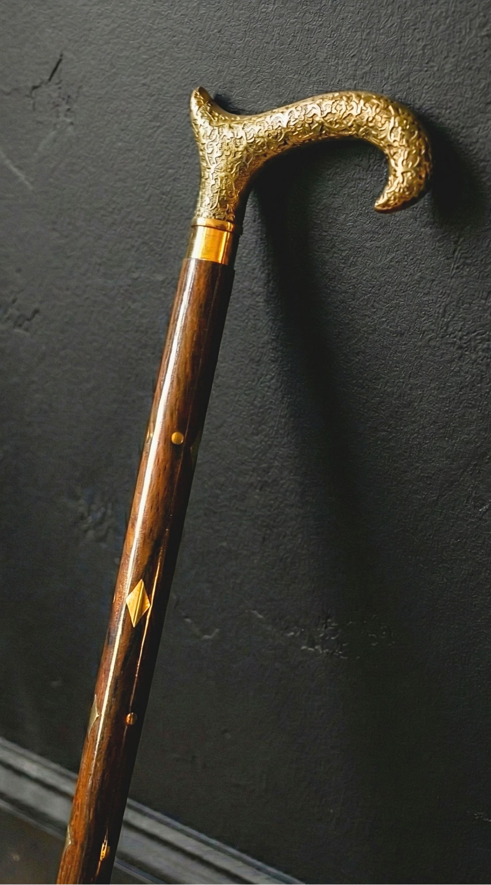
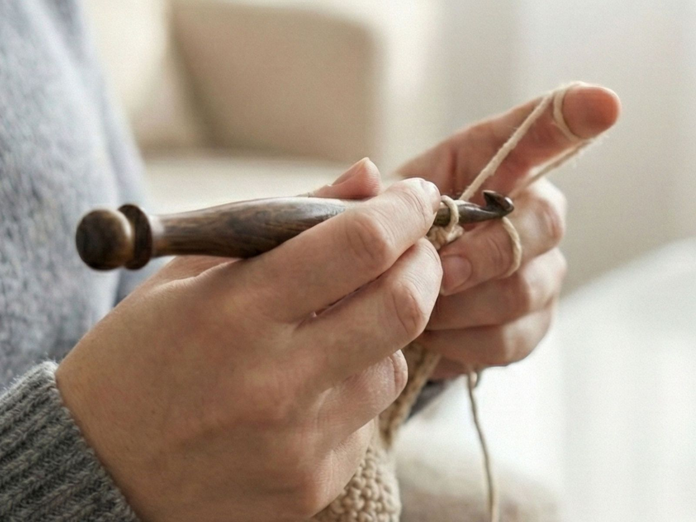

Wood, worked slowly into something kept
KIFRAN began at a grandfather's workbench — a place where time was measured in shavings, not deadlines. We still make things the same way: by hand, with patience, and with the belief that the best objects are the ones you live with for decades.

A family craft, carried forward
What started as tools made for our own family — canes that took the weight of a daily walk, hooks worn smooth by years of yarn — slowly became something we wanted to share. Every KIFRAN piece still carries that intention: made to be used, not just displayed.
We work in small batches with sustainably sourced Indian hardwoods — sheesham, teak, walnut, rosewood — finishing each piece by hand so the grain stays honest beneath your fingertips. No two are ever exactly alike, and that is the point.

To make heirlooms, not products
In a world of mass-produced, throwaway goods, KIFRAN exists to keep slow craft alive — and to put genuinely heirloom-quality wooden pieces within reach of ordinary homes. We believe an object made with care can hold meaning: a cane that becomes a companion, a gift that becomes a memory.
Our mission is simple — craft fewer, better things, treat our makers and materials with respect, and stand behind every piece long after it leaves the workshop.
Made well, backed fully
Premium quality without the premium pretence — here's what comes with every order.